Across datasets
The same panel, recipe and rule on every dataset, side by side. Rebuilt from the committed results with julia --project=showcase showcase/analyses/cross_dataset.jl.
| Dataset | Scale | Curves | Rule pick | ΔBIC to next model | Fully identifiable (%) | Best forecaster (median error) |
|---|---|---|---|---|---|---|
| benzekry2014 llc | mouse | 20 | exponential linear | 4.8 | 55 | power law (13.7%) |
| benzekry2014 lm24 | mouse | 64 | classic gompertz | 10.2 | 58 | power law (15.8%) |
| browning2021 spheroids | spheroid | 170 | theta logistic | 76.1 | 41 | general bertalanffy (5.6%) |
| bruchovsky iadt psa | patient | 72 | classic gompertz exposure kill | 2674.2 | 93 | classic gompertz exposure kill (54.3%) |
| ebos sunitinib | mouse | 99 | classic gompertz exposure kill | 44.6 | 30 | exponential exposure kill (20.7%) |
| ghaffarilaleh2022 recist | patient | 641 | logistic kill | 8.9 | 6 | logistic kill (10.4%) |
| harris2016 pc9 | in vitro 2D | 13 | power law | 16.9 | 23 | general bertalanffy (8.8%) |
| johnson2019 bt474 | in vitro 2D | 48 | weak allee | 1528.1 | — | exponential (13.9%) |
| kaznatcheev2019 h3122 | in vitro 2D co-culture | 288 | theta logistic | 312.7 | 41 | theta logistic (5.3%) |
Fully identifiable: share of curves on which every parameter of the pick has a closed 95% profile interval.
Which law wins where
Each cell is the summed ΔBIC divided by the number of curves, so datasets of different size share one scale; the star marks the rule pick. Grey means the model was not in that dataset's panel.
Untreated growth
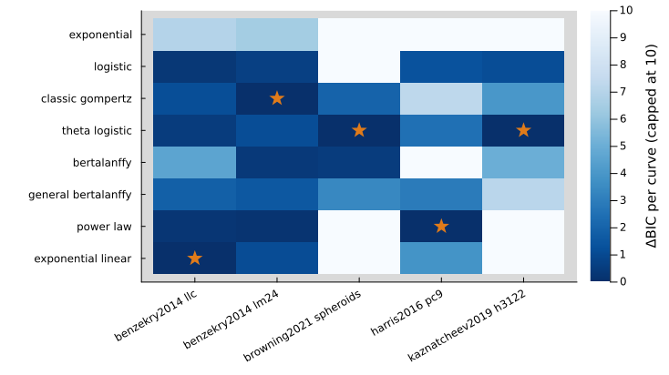
How often each law is the pick when every curve is judged on its own. Short or noisy curves favour simple laws, which is why per-curve shares and the dataset-level pick can disagree.
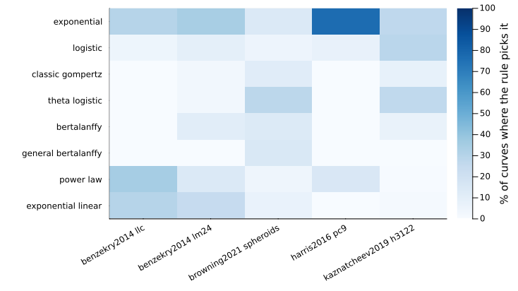
Under treatment
Treated datasets use a panel of treatment-response laws (see each dataset page).
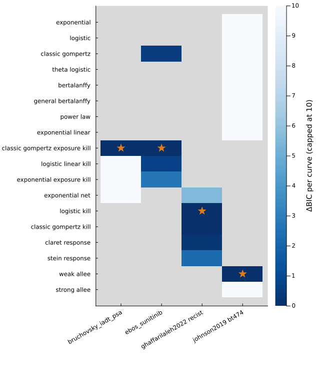
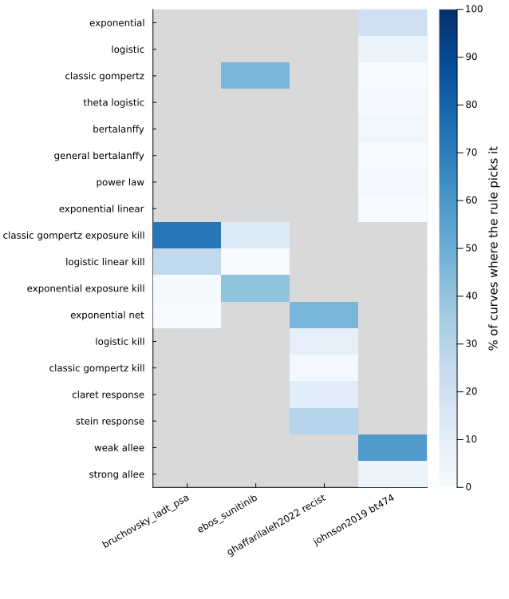
Identifiability by dataset
Share of curves on which every parameter of the pick has a closed 95% profile interval.
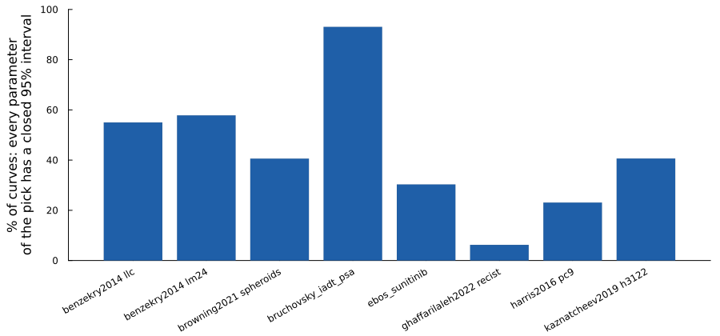
Gallery
Lewis lung carcinoma subcutaneous volumes
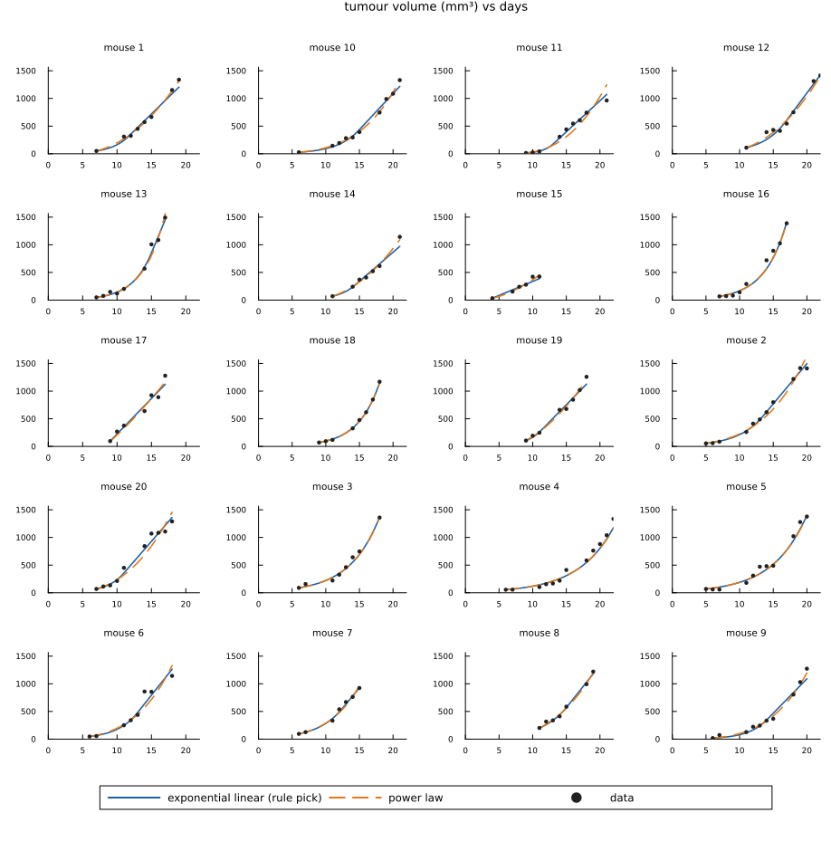
LM2-4LUC+ breast xenograft volumes (vehicle)
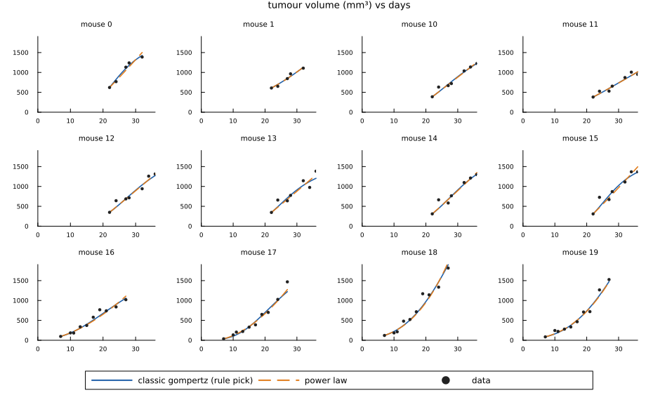
Melanoma spheroid radius over time
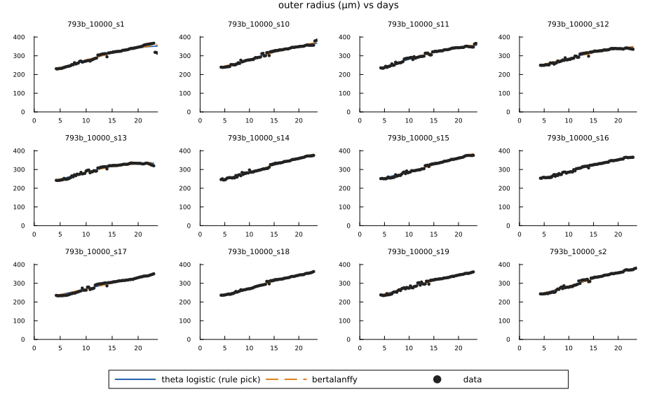
PSA under intermittent androgen deprivation
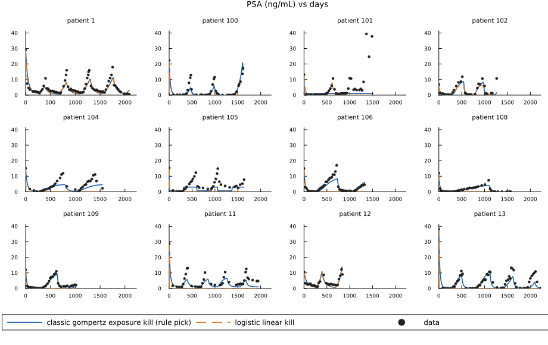
Breast xenografts with neoadjuvant sunitinib or axitinib
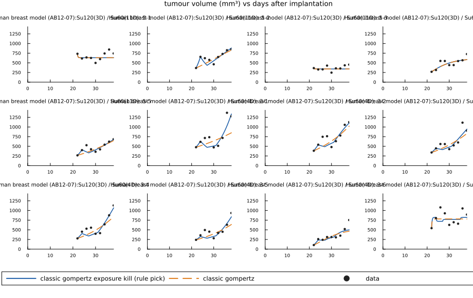
NSCLC and bladder cancer target-lesion diameters under atezolizumab/docetaxel
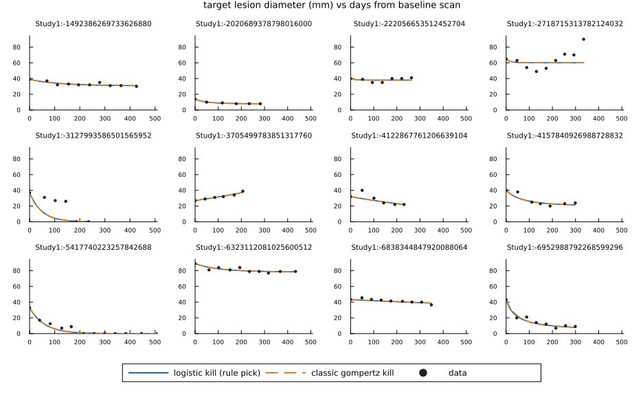
PC9 parental and sublines, untreated
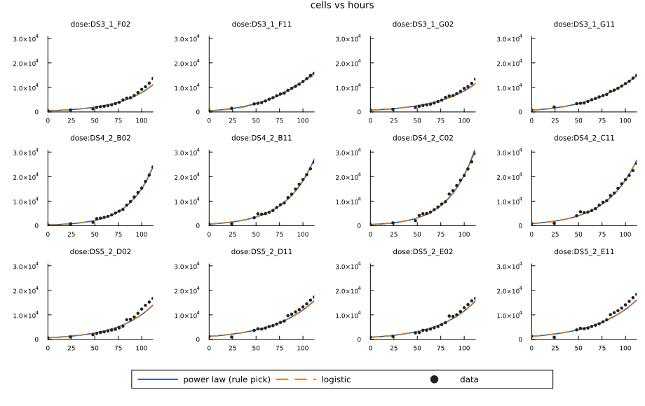
BT-474 growth at low seeding density
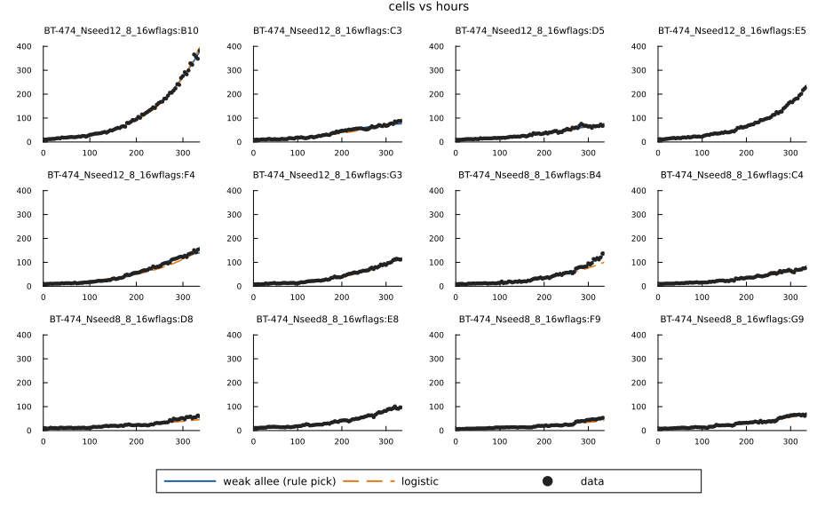
H3122 parental vs alectinib-resistant co-culture
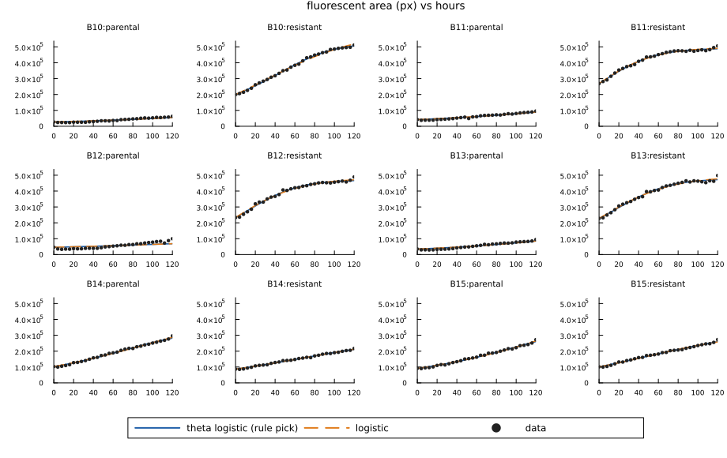